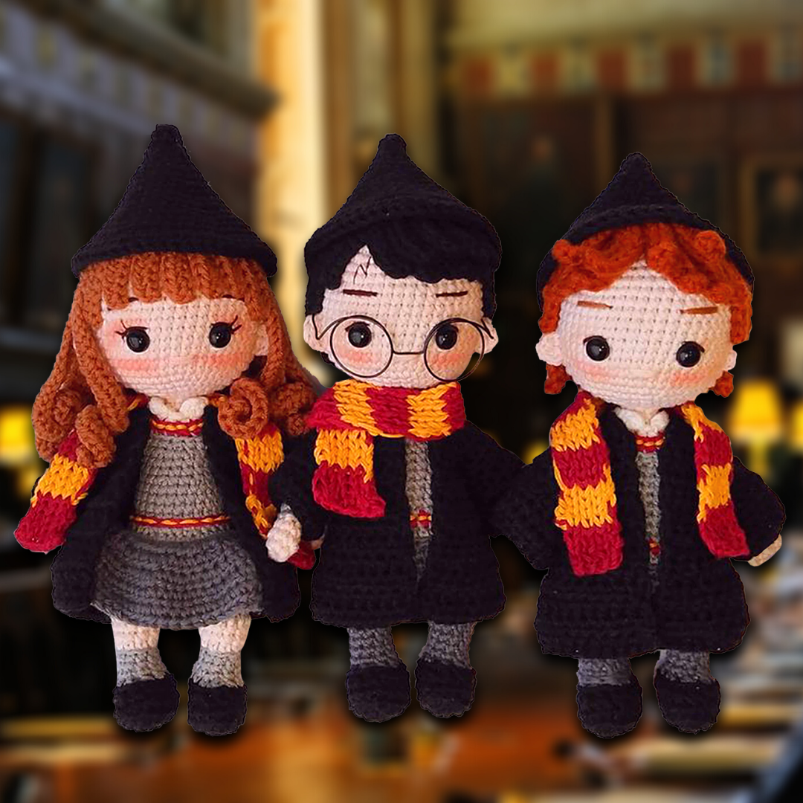

فن الأميجرامي (Amigurumi) هو فن يتضمن صنع الدُمى والأشكال الصغيرة باستخدام تقنية الكروشيه أو الكنزة. تعتبر هذه
الأشكال غالبًا بمثابة حيوانات أو شخصيات أو أشياء منوعة، وتكون عادةً بحجم صغير جدًا
عند صنع قطع الأميجرامي، يتم تنسيق الألوان والتفاصيل بعناية لإضفاء الشكل النهائي المميز للقطعة. وتستخدم تقنيات
مختلفة مثل زيادة ونقصان الحلقات وتغيير اللون وتطويق الأشكال لخلق تأثيرات مختلفة.
بصفة عامة، فن الأميجرامي يجمع بين الحرفية والإبداع لإنشاء قطع فنية فريدة ومحببة للجمهور، وقد أصبح هذا الفن جزءًا
مميزًا من ثقافة صناعة الحرف اليدوية والإبداعية.

المهام المطلوبة من المتقدمين للعمل
مهارات الكروشيه:
يجب أن تكون لديك مهارات جيدة في فن الكروشيه. يعني ذلك القدرة على تنفيذ الأنماط والتقنيات المختلفة باستخدام
الإبرة والخيوط بشكل صحيح
إبداع وتصميم
مكنك أن تبرز من خلال قدرتك على تصميم أشكال فريدة ومبتكرة. يمكنك تطوير قطع أميجرامي تحمل توقيعك الخاص وتميزك
عن الآخرين.
صبر ودقة
فن الأميجرامي يتطلب صبرًا ودقة عالية. يجب عليك العمل بدقة على تفاصيل صغيرة جدًا وأن تكون صبورًا أثناء عملية
النسج.
قدرة على اتباع الأنماط
ي بعض الأحيان، قد تحتاج إلى اتباع أنماط معينة لإنشاء تصاميم معينة. القدرة على قراءة وفهم الأنماط بشكل صحيح
هي مهمة.
مهارات تنسيق الألوان
تنسيق الألوان يلعب دورًا مهمًا في جعل قطع الأميجرامي مرئيّة وجذابة. عليك أن تملك بعض المفاهيم الأساسية حول
تنسيق الألوان.
مهارات التسويق والتصوير:
ذا كنت تخطط لبيع قطع الأميجرامي الخاصة بك، فقد تحتاج إلى مهارات تسويقية لتسويق منتجاتك بفعالية. القدرة على
التصوير الجيد يمكن أن تسهم في تسويق قطعك عبر الإنترنت.
الإبداع والتجديد
يجب أن تكون مستعدًا لتجربة أشكال وأفكار جديدة ومبتكرة. القدرة على التجديد وتطوير مهاراتك باستمرار تعزز من
قيمتك كفنان في هذا المجال.
التفرغ والالتزام
مكن أن تستغرق عمليات الكروشيه وإنشاء قطع الأميجرامي وقتًا طويلاً، لذا يجب أن تكون ملتزمًا ومستعدًا للتفرغ
للعمل على مشاريعك.